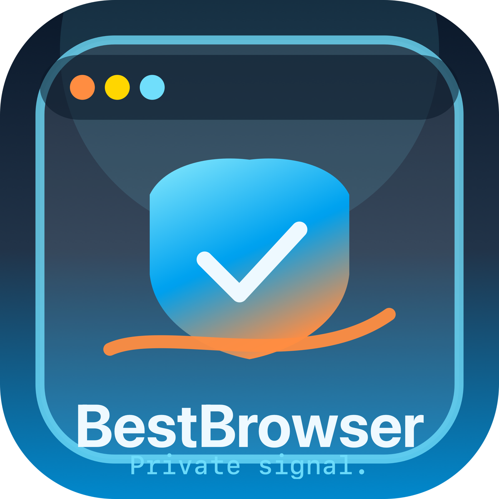
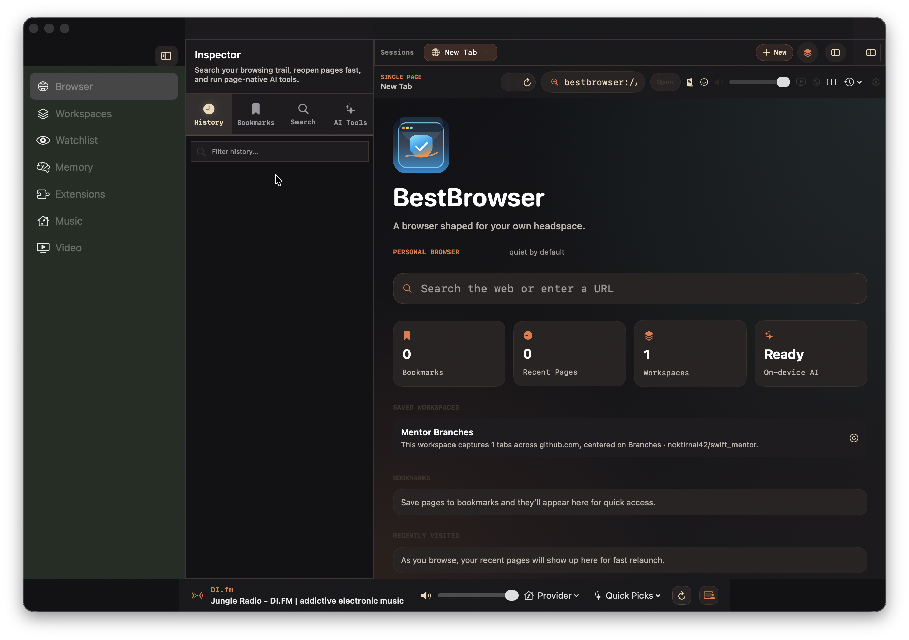
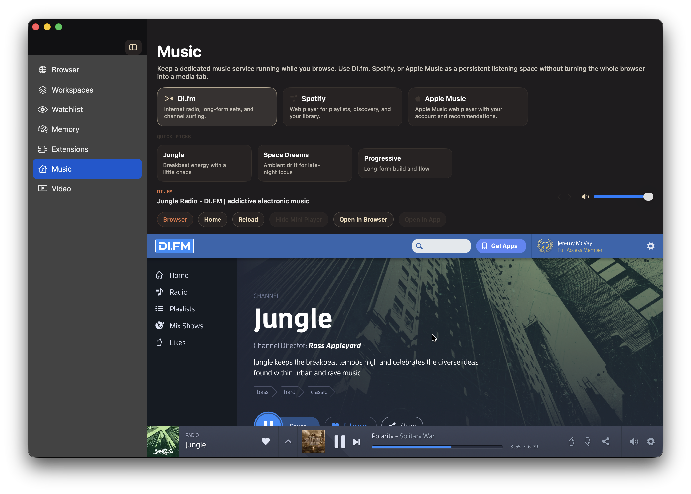
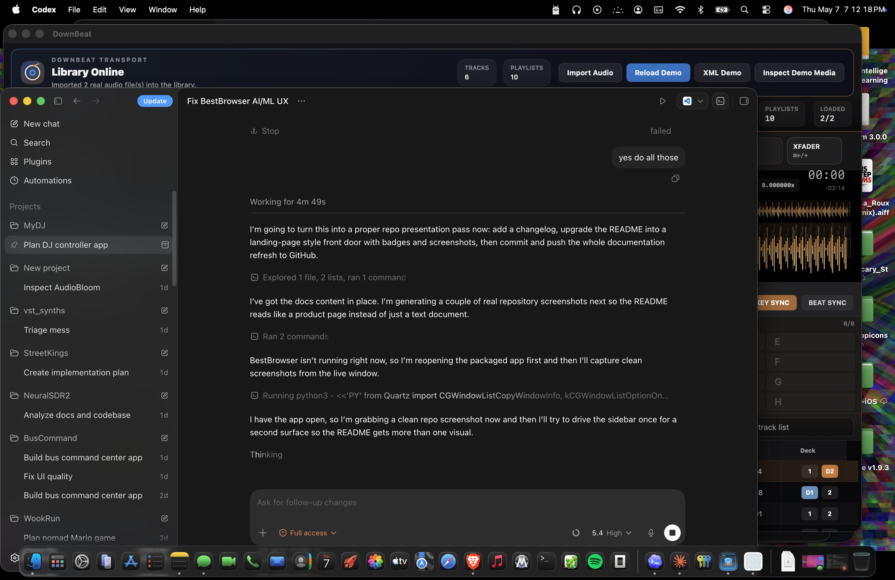

BestBrowser 0.3.1
BestBrowser is a native macOS browser workspace built with SwiftUI and WebKit for people who keep research, saved sessions, background media, privacy tooling, and on-device AI in one place.

Why It Exists
Keep a working set of tabs, saved workspaces, watched pages, AI summaries, and page memory alive without scattering your context across apps.
Music and video stay nearby through persistent companion surfaces and a floating pane, instead of taking over your main browsing view.
Keyboard-driven commands, scene routing, vertical tabs, split view, and inspector surfaces make the app feel like a real desktop tool rather than a themed wrapper.
Privacy Shield, popup stripping, tracker blocking, and page cleanup ship inside the browser instead of being scattered across add-ons and menu utilities.
Product Screens



Core Surfaces
Tabbed browsing, split view, inspector tools, page actions, command routing.
Save and restore grouped browser sessions for research and revisit flows.
Monitor important pages over time without leaving the app.
Recall captured page context, pinned notes, and revisited history.
Run bundled or user-provided browser-native page actions.
Keep background streams nearby through dedicated media surfaces and a floating pane.
Get Started
BestBrowser currently targets macOS 26+, Swift 6.3+, and Apple Intelligence-enabled Macs for on-device AI features.